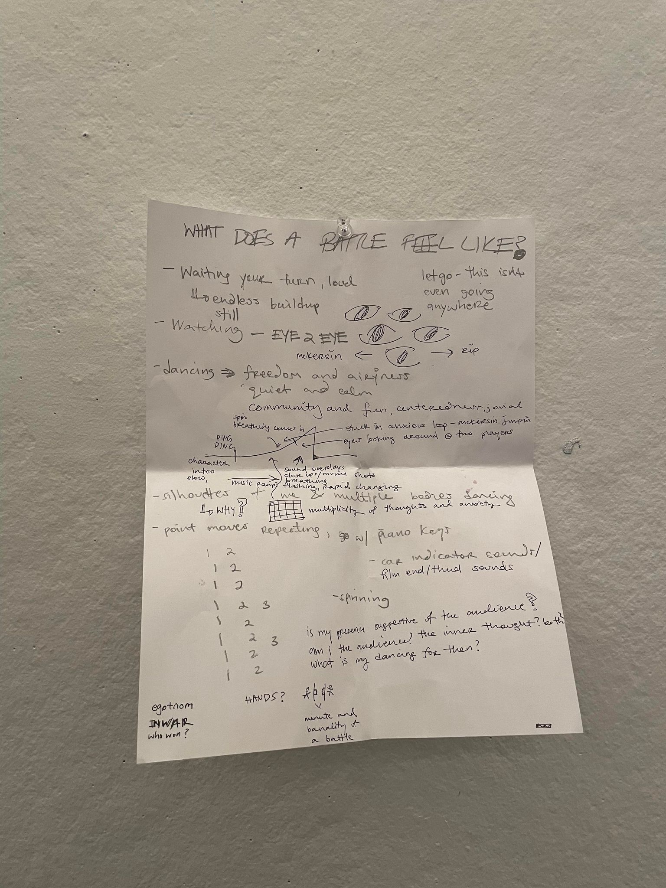
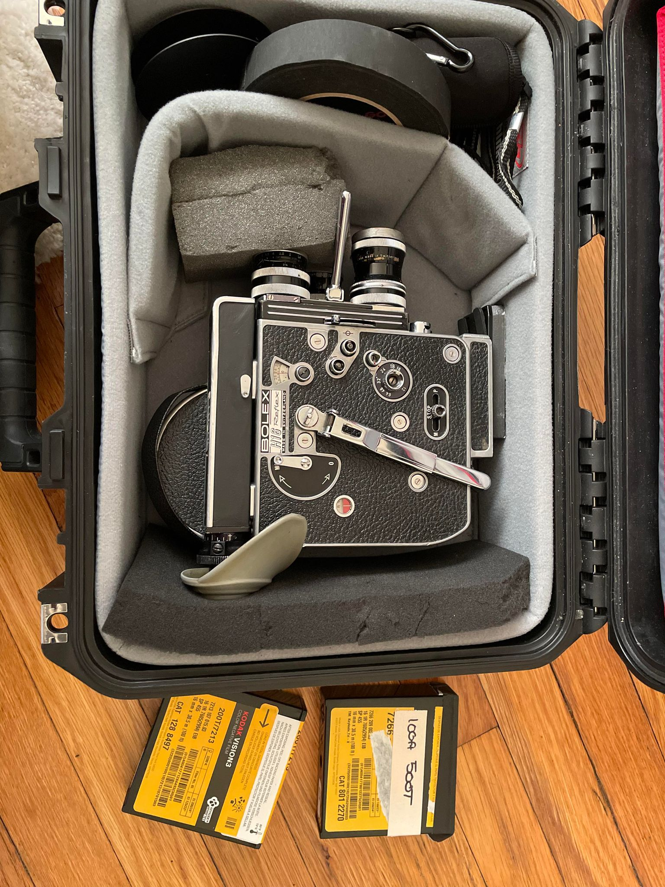
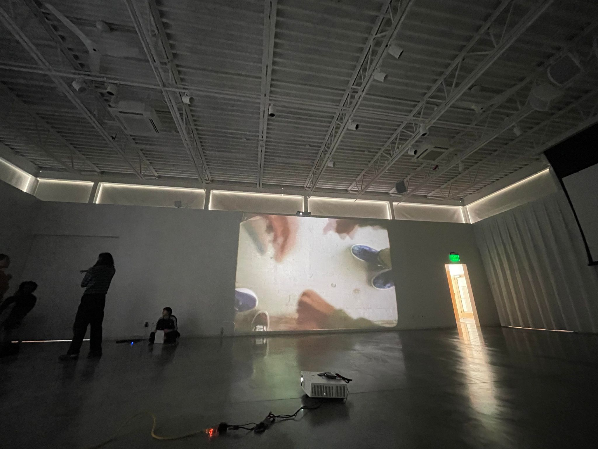
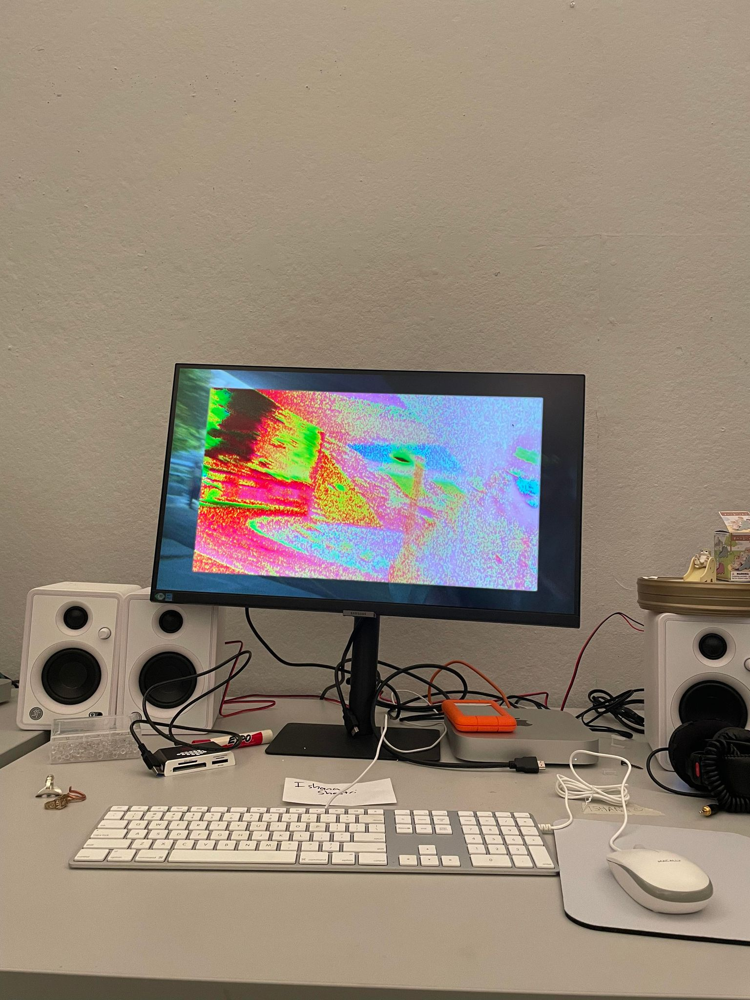
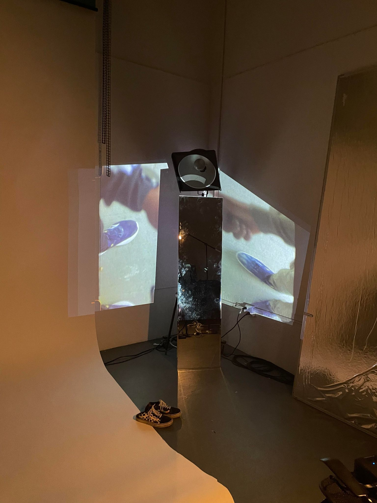
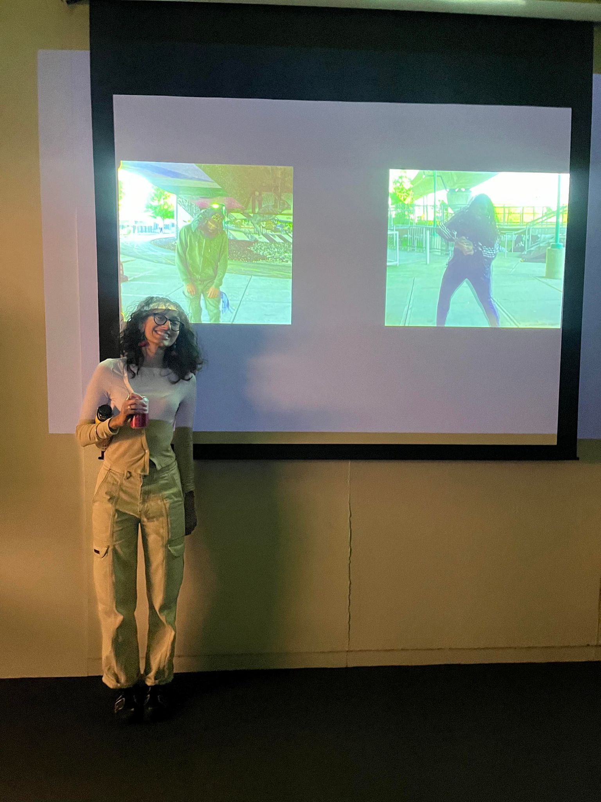

whoWon? [2023]
I directed, filmed, and edited this piece on what a hip hop dance battle feels like. I went through several iterations of this piece for
the class AFVS 264: Advanced Projects in Time-Based Media at Harvard University. The first few versions were a multi-channel installation piece
focusing on the aesthetics of an outsider judging a dance battle. However, I pivoted to a single-channel projection depicting the internal unfolding of a battler's emotions throughout stages of a battle.
This piece touches on space (both literal and mental), discomfort, anxiety, and voyeurism (yourself to yourself, the audience to yourself, you to the audience).
This was my first time shooting raw 16mm film. This was filmed on a Bolex H16 and edited digitally on Adobe Premiere Pro. Certain parts were also filmed on a Canon EOS R6.
Featuring freestyle rounds by McKersin Previlus and Big Rip. Soundtrack partially credited to Ben Hogewood who generously let me use two of his mixes while we were both creatively stuck in studio post midnight. And of course, this couldn't have been done without the help from Karthik Pandian and Vera Rosen-Bernstein.
Real 16mm film is so beautiful. I kind of wanted to leave it fully unedited.
Featuring freestyle rounds by McKersin Previlus and Big Rip. Soundtrack partially credited to Ben Hogewood who generously let me use two of his mixes while we were both creatively stuck in studio post midnight. And of course, this couldn't have been done without the help from Karthik Pandian and Vera Rosen-Bernstein.
Real 16mm film is so beautiful. I kind of wanted to leave it fully unedited.
 
initial film braindump (left) and Bolex H16 camera (right)

middle channel of v1 of the installation

snippet of v1 of the installation


experimenting with digital manipulations (left) and textured projections (right)
 
experimenting with reflections (left) and project premiere at AFVS Open Studios (right)